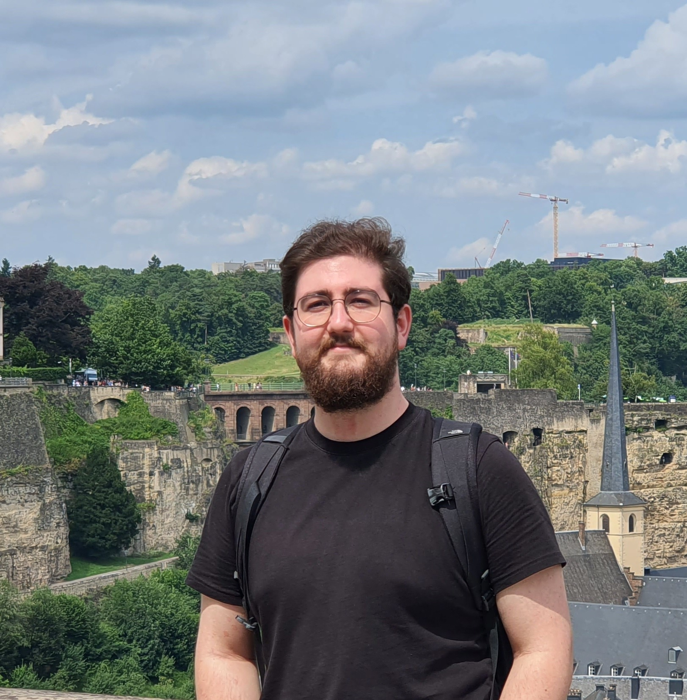

|
Dhimitrios Duka
Hi! I'm Dhimitrios and currently, I'm pursuing my Computer
Science master's degree at
Saarland University. Prior to this, I worked as a web developer,
contributing to the
Unified Patent Court CMS. I have completed my bachelor's degree in Computer
Engineering at the
Polytechnic University of Tirana (UPT)
with high honors under the supervision of
Assoc. Prof. Evis Trandafili, where my thesis involved developing the first Image
Captioning generator for the Albanian language.
My research interests include Computer Vision &
Graphics, Explainable Machine Learning, and its
applications within the field of Computer Vision.
Email
/
CV /
LinkedIn
/
Github
|

|
|
|
Multilingual Language Model Fine-Tuning
Dhimitrios Duka,
Kai Wittenmayer
We analyze the effects of different fine-tuning methods (Full fine-tuning, BitFit, LoRA, IA3) on language models, with a focus on underrepresented languages like quy_Latn. We compare the performance of pre-trained models such as XGLM-564M and GPT-2 on multilingual datasets like NLLB and assess their hidden state representations. Visualization techniques, including PCA and t-SNE, are applied to represent the hidden states of tokens and sentences in multilingual spaces. Additionally, we evaluate the performance trade-offs associated with parameter-efficient fine-tuning techniques.
|
|
|
Zeus: A Ray Tracer
Dhimitrios Duka,
Arseny Dremin
Zeus is a ray tracer developed on top of the
lightwave framework as the final project
for the
Computer Graphics course at Saarland University
during the winter semester of 2023/2024 by Dhimitrios Duka
and Arseny Dremin.
|
|
|
A Neural Image Caption Generator for the Albanian
language
Dhimitrios Duka
We employed an Encoder-Decoder architecture to generate
automatic image captioning in the Albanian language,
utilizing transfer learning with pre-trained image
features in the encoder to enhance performance. To our
best knowledge, this work represents the first
implementation of image captioning for the Albanian
language.
|
|
{kind=link}